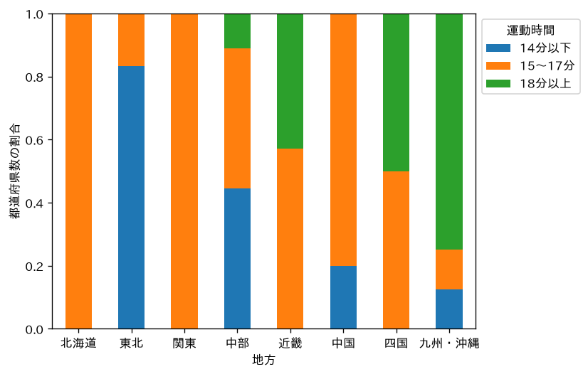

軸の選び方と誇張の影響
縦軸と横軸の選び方
同じデータでも, 縦軸と横軸に何を取るかで読み取れることが変わります. そのため, 図を描く前に, 問いに対して軸の候補を書き出します. 積み上げ棒グラフで使った都道府県別のデータで, 問い「運動時間は地域によって違うか」に対する候補を書き出すと, 次のようになります.
| 軸 | 候補 | 読み取りやすいこと |
|---|---|---|
| 横軸 | 都道府県 (北から南の順) | 地理的な並びに沿った変化 |
| 横軸 | 都道府県 (運動時間の長い順) | 順位, 上位と下位の都道府県 |
| 横軸 | 地方 | 地方単位の違い |
| 縦軸 | 運動時間 (分) | 各都道府県の水準 |
| 縦軸 | 階級ごとの都道府県数 | 地方の中の内訳 (合計は地方の都道府県数に左右される) |
| 縦軸 | 階級ごとの都道府県数の割合 | 都道府県数の違う地方同士の内訳の比較 |
候補を並べたら, 問いに答えられる組み合わせを選びます. 軸の比較と誇張の例のために, 積み上げ棒グラフと同じ手順でデータを読み込み直します. 誇張と強調が読み取りに与える影響のコードも, この df と order を使います.
df = pd.read_csv('data/pref_stats.csv', encoding='utf-8-sig')
region = pd.read_csv('data/pref_region.csv', encoding='utf-8-sig')
# pref 列が一致する行同士をつないで, 地方の列を加えます.
df = df.merge(region, on='pref')
# 運動時間を 3 つの階級に分けます. (0, 14], (14, 17], (17, 60] の区間になります.
df['sports_class'] = pd.cut(df['sports']
,bins=[0, 14, 17, 60]
,labels=['14分以下', '15〜17分', '18分以上'])
# 地方の並び順
order = ['北海道', '東北', '関東', '中部', '近畿', '中国', '四国', '九州・沖縄']実数か割合か
積み上げ棒グラフの図は縦軸が都道府県数 (実数) なので, 棒全体の高さが地方ごとに違います. 縦軸を地方の中での割合にすると, どの地方の棒も高さが 1 になり, 内訳の割合を直接比べられます.
# normalize='index' で, 各行 (地方) の合計が 1 になるように割合に直します.
ratio = pd.crosstab(df['region'], df['sports_class'], normalize='index').reindex(order)
print(ratio.round(2))
ratio.plot.bar(stacked=True, rot=0)
plt.xlabel('地方')
plt.ylabel('都道府県数の割合')
plt.legend(title='運動時間', bbox_to_anchor=(1, 1))
plt.show()sports_class 14分以下 15〜17分 18分以上
region
北海道 0.00 1.00 0.00
東北 0.83 0.17 0.00
関東 0.00 1.00 0.00
中部 0.44 0.44 0.11
近畿 0.00 0.57 0.43
中国 0.20 0.80 0.00
四国 0.00 0.50 0.50
九州・沖縄 0.12 0.12 0.75bbox_to_anchor=(1, 1) は, 凡例を図の右上の外に置く指定です.

18 分以上の県は, 実数では近畿が 3 県, 四国が 2 県で近畿のほうが多いのに対し, 割合では四国が 0.50, 近畿が 0.43 で四国のほうが大きくなります. 実数の図は「どの地方に 18 分以上の県が多いか」に, 割合の図は「どの地方で 18 分以上の県の比率が高いか」に答えます. ただし北海道は 1 道だけなので, 割合は 0 か 1 にしかなりません. 割合の図では, もとの件数が少ないグループの値が大きく振れる点に注意が要ります.
都道府県の人口や面積のように比べる単位の大きさが違うときも, 同じ判断が要ります. 例えば都道府県ごとの病院の数は人口の多い都道府県ほど多くなりやすく, 医療の手厚さを比べるなら人口あたりの数に直します.
対数軸
値が何桁にもわたって開いているとき (例えば 10 と 100000 が同じ図に並ぶとき) は, 縦軸を対数軸 (plt.yscale('log')) にする方法があります. 対数軸では目盛りの等間隔が等しい比 (何倍か) を表すので, 小さい値同士の違いも読めるようになります. 一方で, 棒の長さは値に比例しなくなるので, 対数軸には棒グラフより点や線で描く図が向きます.
都道府県別のデータでは, 開きの最も大きい食費でも最大 (83506 円) が最小 (56298 円) の約 1.5 倍にとどまり, 対数軸にしても図はほとんど変わりません. 対数軸を使うかどうかは, 値の最大と最小の比を確かめてから決めます.
横軸の並べ方
都道府県ごとの棒グラフでは, 横軸に都道府県をどの順に並べるかで読み取れることが変わります. データのファイルは北海道から沖縄県まで北から南の順に並んでいるので, そのまま描いた図と, 運動時間の長い順に並べ替えた図を比べます.
fig, axes = plt.subplots(nrows=2, figsize=(12, 7))
# 上: ファイルの並び (北海道から沖縄県まで, 北から南の順) のまま描きます.
axes[0].bar(df['pref'], df['sports'])
axes[0].set_title('北から南の順')
# 下: 運動時間の長い順に並べ替えてから描きます.
df_sorted = df.sort_values('sports', ascending=False)
axes[1].bar(df_sorted['pref'], df_sorted['sports'])
axes[1].set_title('運動時間の長い順')
for ax in axes:
ax.set_ylabel('運動時間 (分)')
ax.tick_params(axis='x', rotation=90)
fig.tight_layout()
plt.show()plt.subplots(nrows=2) は 1 枚の図を上下 2 つの領域に分け, axes[0], axes[1] でそれぞれの領域に描きます (グラフの分割で詳しく扱います).

北から南の順の図では, 東北の各県 (12〜15 分) が低く, 九州の長崎県から沖縄県 (18〜20 分) が高く, 南へ行くほど運動時間が長くなる傾向が見えます. 長い順の図では, 最も長いのが熊本県と沖縄県 (20 分), 最も短いのが山形県 (12 分) という順位が読めますが, 地理的な傾向は読めません. 地域による違いを見るには北から南の順が, 順位を見るには長い順が向きます.
この節に対応する演習は, Exercise DSP3-2です.